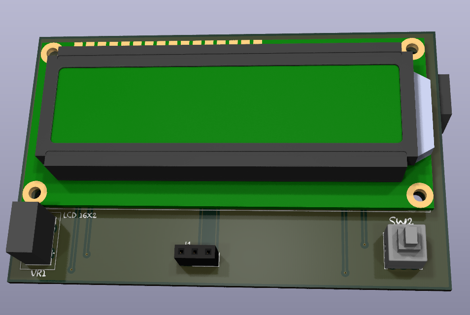
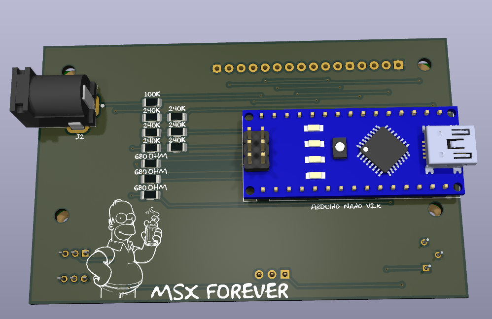
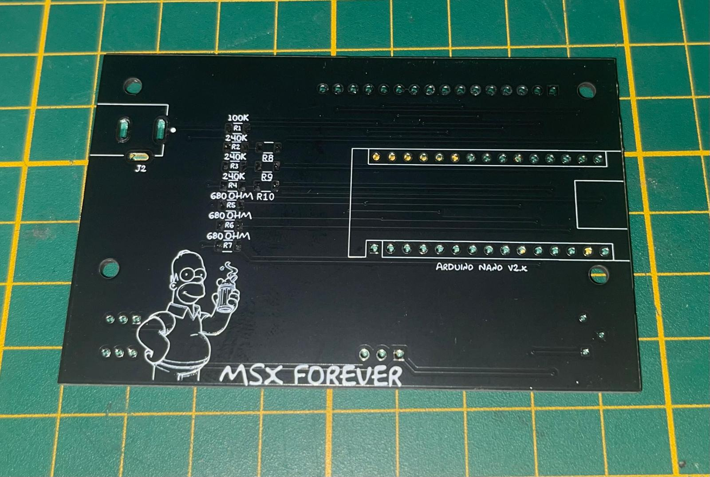
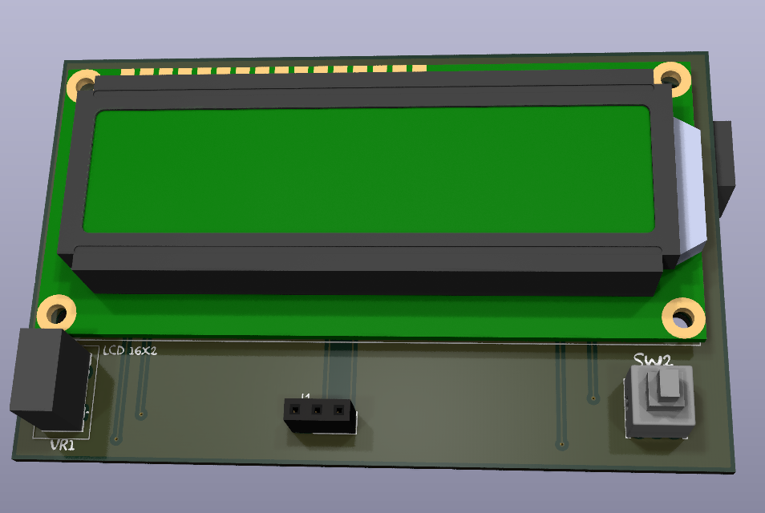
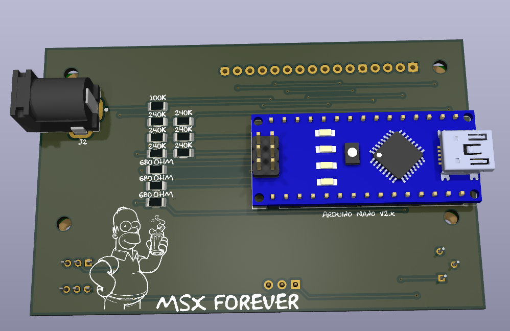
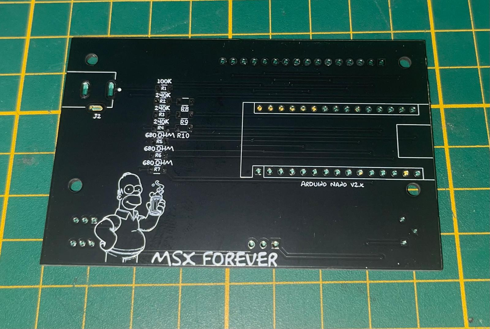

Productos electrónica DIY
Ardutester Kit
 





Aparato a base de arduino para comprobar estado de componentes electrónicos, Placa diseñada por mi, mirar el repositorio, dentro del mismo esta el codigo y la carcasa para impresion en 3D
Repositorio